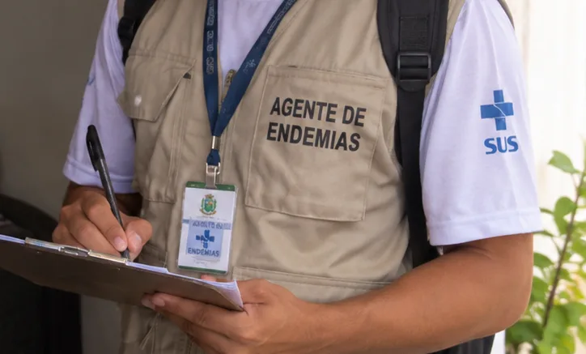
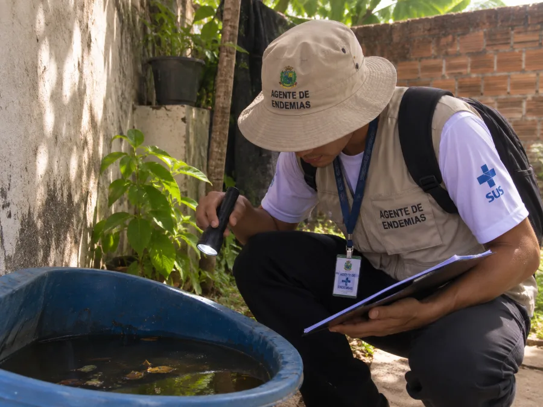
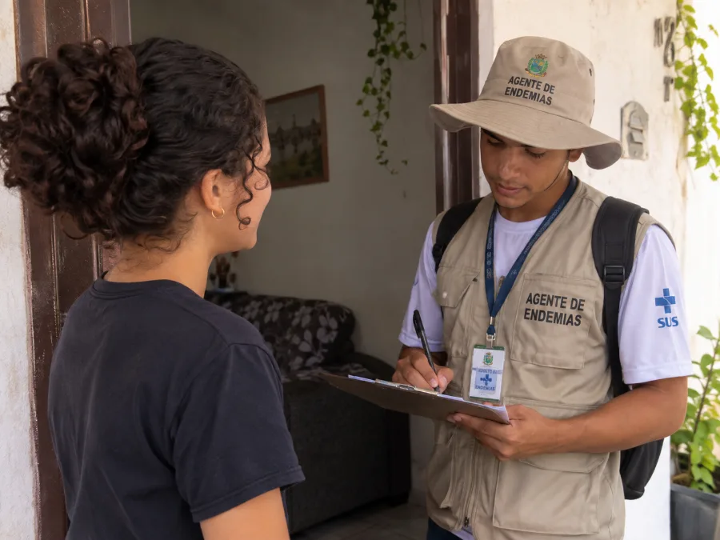

Receber o agente
Conheça a visita e tire suas dúvidas.
O que fazer?
-

Confira a identificação.
-

Acompanhe a observação dos locais.
-

Converse sobre os cuidados.
Dúvidas frequentes
Peça a identificação funcional. Em caso de dúvida, confirme com o serviço municipal por um canal oficial.
Locais que podem acumular água e condições favoráveis ao mosquito, conforme a rotina do serviço.
Peça para acompanhar a visita e aproveite para esclarecer os cuidados indicados.
Consulte o serviço municipal sobre como proceder e sobre a possibilidade de uma nova visita.
Procure o serviço municipal responsável pelo controle de endemias ou sua unidade de saúde.
Separe suas dúvidas e facilite o acesso seguro aos locais que precisam ser observados.